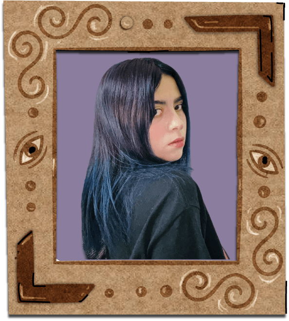
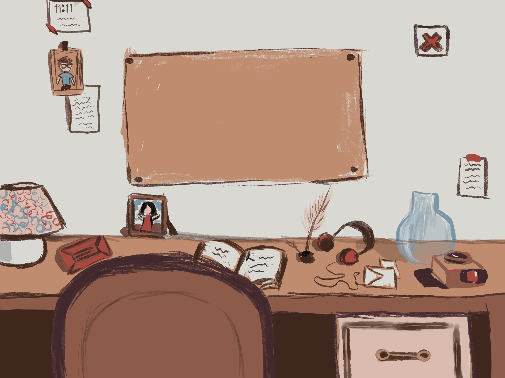
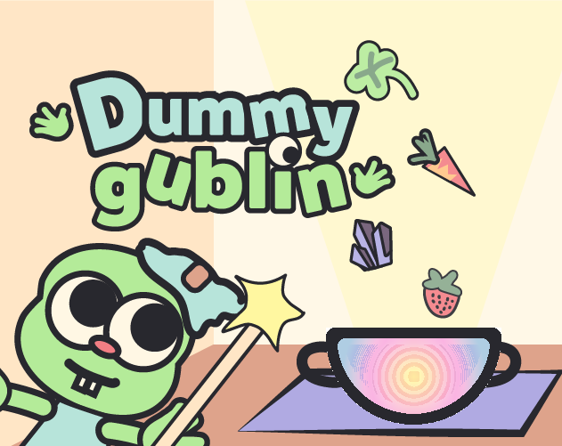

Hola, soy Sam
Technical Artist Unity & Digital Designer
Unifico el arte visual y la programación lógica. Especializada en optimización WebGL, shaders personalizados, pipeline de gráficos 3D/2D dentro de Unity.

Sobre Mí & Habilidades
Combinando lógica matemática y pasión por el arte en cada píxel y frame.
Sobre mí
Diseñadora Digital especializada en diseños interactivos y arte digital. Con bases sólidas en comunicación visual y formación en la creación de Game Design Documents (GDD) y desarrollo en Unity, destaco por mi capacidad de traducir ideas mecánicas y narrativas en esquemas claros y visuales. Busco mi primera oportunidad profesional en la industria de videojuegos para colaborar en el diseño de interacción, documentación técnica y lógica de juego
Lo que más disfruto de mi trabajo es presenciar cómo una idea abstracta se transforma en un prototipo jugable capaz de despertar emociones en las personas. Siempre estoy abierta a colaborar en proyectos desafiantes, Game Jams e iniciativas que busquen llevar el desarrollo de juegos al siguiente nivel.
Stack Técnico & Herramientas
Proyectos Destacados
Sistemas de shader, prototipos indies y desarrollo técnico.

Pack & Pick
Simulador de Tienda de Antigüedades
Juego acogedor centrado en la inspección, reparación y empaque de objetos antiguos. En desarrollo.

DummyGublin
Brewing Craft Game
Videojuego desarrollado en 48 horas para una Game Jam. Encargada del Technical Art, Game Design, UI, Development, Level Design.
Hablemos y Cremos Algo Increíble
Escríbeme para colaboraciones en videojuegos, desarrollo de shaders personalizados o consultoría de Technical Art.